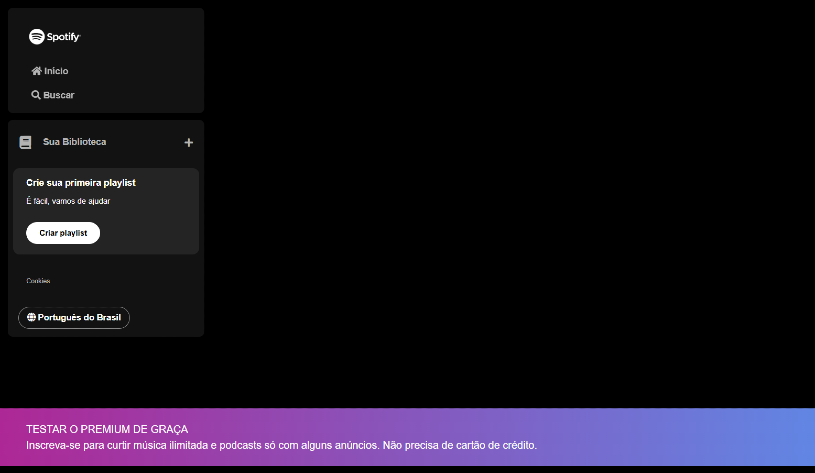

-
Aula 0
HTML e CSS: ambientes de desenvolvimento, estrutura de arquivos e tags
-

Aula 1
Revisão: HTML, CSS e JS na Prática + Desafio
-

Aula 2
Estilo Avançado e Posicionamento: Transformando Layouts